프로젝트 소개: 《Stellar Blade》의 전투 경험을 참고해 Player와 Enemy가 공유하는 Action·Reaction·Damage 실행 구조를 설계하고, 콤보·가드·패링·회피·처형을 구현한 3인칭 액션 RPG 프로젝트입니다.
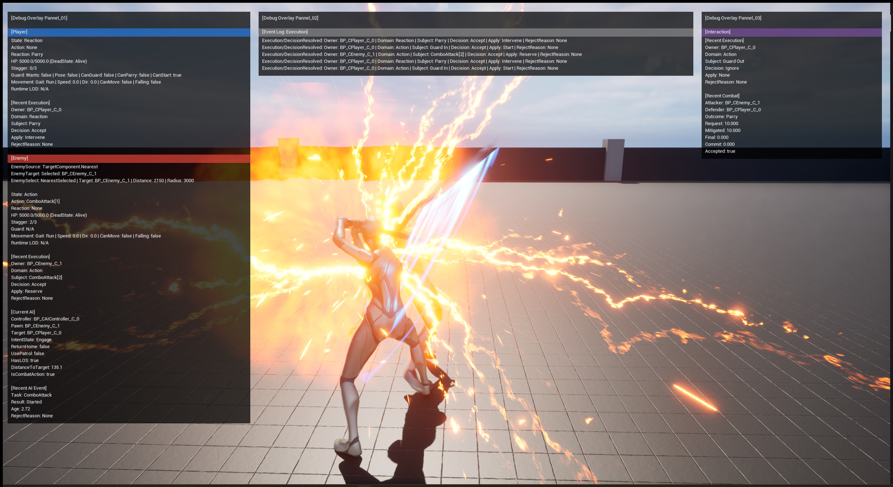
대표 전투 프레임 | 구현과 검증을 동시에 확인하는 Runtime Combat전투 실행 중 Action·Reaction·Target·Facing 상태와 이벤트 기록을 같은 장면에서 대조합니다. 구현 결과를 실시간으로 측정·검증하는 흐름이 이 포트폴리오의 핵심 주제이므로 대표 프레임으로 선정했습니다.
PORTFOLIO FOCUS전투 시스템을 설명·검증·기록하는 세 가지 기준
전투 기능을 “단순 구현 결과”가 아닌 “공유 실행 구조와 검증 가능한 개발 과정”으로 설명합니다.
구조 설계
책임을 분리하고 일관된 실행 흐름을 설계합니다.
DIAGRAM · FLOWCHART
측정·검증
런타임 데이터를 관찰해 구현 결과와 문제 원인을 확인합니다.
PIE · CSV · DEBUG OVERLAY
문서·기록
계획부터 검증까지의 판단 근거를 남겨 변경의 연속성을 유지합니다.
ISSUE · PR · DOCS
대표 근거
전투 실행·AI 참여 구조를 다이어그램으로 설명하고, CSV Profiler·Debug Overlay로 결과를 검증하며, GitHub와 설계 문서로 변경 근거를 추적합니다.
핵심 기준: Action과 Reaction은 별도 도메인 실행을 유지합니다. p.12에서 허용된 전환만 Directive로 전달하고, 기존 executor의 terminal cleanup이 끝난 뒤 다음 executor를 시작합니다.
구조 문제 | 암시적 종료 callback에 의한 Active Runtime 정리 위험
새 요청·종료 대상·정리 범위가 종료 callback에 남지 않았습니다.새 Hit Reaction은 기존 실행의 종료·정리 완료를 명시적으로 확인하지 못했습니다. `Montage End` callback은 전환 관계를 연결하지 않으므로, 현재 Active Runtime까지 넓게 정리할 위험이 있었습니다.
Before / After | 암시적 종료 callback을 전환 계약으로 분리
BEFORE | Montage End callback에 의존한 종료
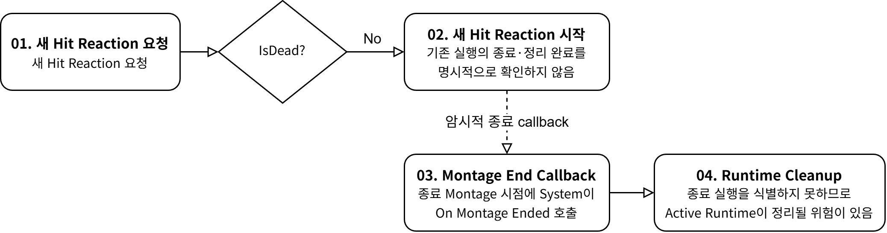
AFTER | Directive로 종료·정리 뒤 다음 실행 시작
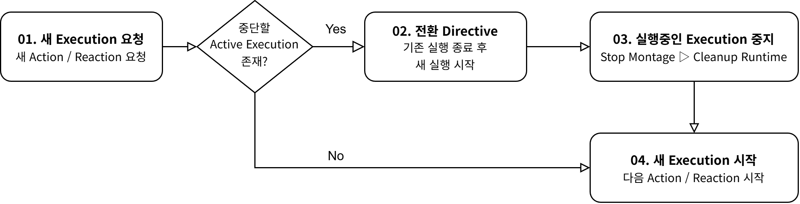
다이어그램 해설 | 위는 callback에 의존한 종료, 아래는 Directive로 기존 실행을 정리한 뒤 다음 실행을 시작하는 경로를 비교합니다. 전환 허용 정책은 p12에서 결정합니다.
구조 해결 | 전환 계약으로 인한 명시적 Cleanup
Orchestrator허용된 전환을 판단하고, 중단 대상·사유·후속 시작을 담은 Directive를 생성합니다.
기존 Executor자기 Montage와 Runtime Effect만 terminal path에서 종료·정리합니다.
다음 Executor기존 실행의 정리 뒤 자기 lifecycle을 시작하며, 이전 상태를 직접 추측하지 않습니다.
핵심 기준: 정책은 “실행할 수 있는가”를 넘어서, 수락된 요청의 공존·연속·개입 관계와 실제 적용 방식을 분리해 결정합니다.
구조 문제 | 수락·관계·적용을 한 조건에 섞을 때의 정책 불명확성
“실행 가능한가”만으로는 요청의 다음 동작을 결정할 수 없습니다.수락 여부, 기존 실행과의 관계, 실제 적용 방식을 한 조건에 섞으면 거절·예약·개입의 이유가 흐려집니다. 특히 `Exclusive` 전환은 incoming의 개입 의도와 active의 허용을 함께 판단해야 합니다.
정책 흐름 | 수락된 요청만 관계와 적용 방식으로 진입
POLICY FLOW | Accept → Relationship → Apply
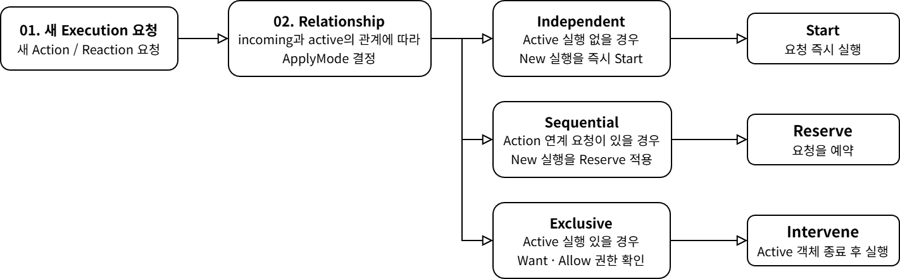
다이어그램 해설 | 수락된 요청은 Relationship에 따라 즉시 실행·예약·개입으로 갈립니다. 이 그림은 적용 방식을 고르는 정책이며, 실제 종료·정리는 p11 전환 계약이 담당합니다.
적용 사례 | 실제 Action / Reaction의 정책 경로
IndependentIdle 상태 → `ComboAttack[0]` 요청Start로 즉시 실행Sequential`ComboAttack[0]` Chain Window → `ComboAttack[1]` 요청Reserve → AdvanceCombo Notify에서 ConsumeExclusiveGuard In Action 중 → Parry Reaction 요청Intervene → Guard 정리 후 Parry 실행
핵심 기준: Source는 hit window, 충돌 문맥, damage 요청에 필요한 사실을 구성합니다. Guard·Parry·Reaction Outcome의 결정은 Target 경계 뒤에서 이루어집니다.
구조 문제 | 공격자가 Target 반응까지 결정할 때의 객체 간 결합
Source가 Target의 상태·Montage·반응 종류를 지정하면 책임이 역류합니다.상대 상태와 캐릭터별 분기가 공격자 측에 쌓이면, Target의 방어 규칙이나 반응 종류가 늘어날수록 Source도 함께 수정해야 합니다. Source가 보존할 대상은 결과가 아니라 타격 사실과 요청 피해입니다.
Source → Target Boundary | 사실·요청 피해 전달, 결과 결정은 Target
HIT / DAMAGE | Source fact → Target damage entry
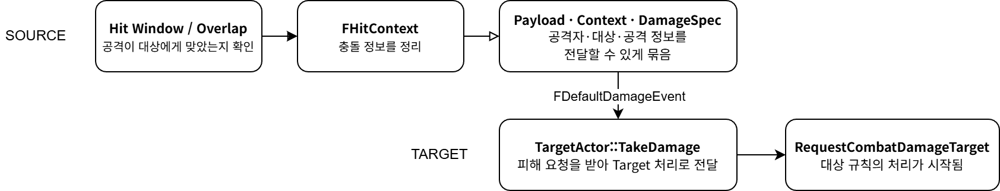
CUE | Source signal → Target signal entry
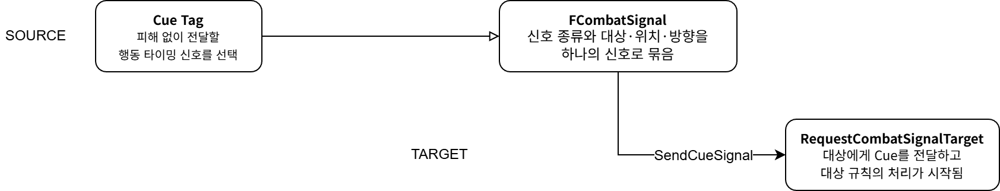
다이어그램 해설 | 위 lane은 충돌 사실과 피해 요청을 Source에서 준비해 Target Damage 진입점으로 넘깁니다. 아래 lane은 Cue를 별도 Signal로 전달하며, 결과 확정은 p14에서 처리합니다.
핵심 기준: Target은 incoming packet과 자기 pre-state를 함께 해석합니다. Defense·Damage·Reaction Outcome을 Target 경계에서 확정해 실행 전환 판단으로 Damage 흐름이 역류하지 않게 합니다.
구조 문제 | 피해 전달 뒤 방어·반응 판단의 책임이 분산될 때의 흐름 역류
Guard·Parry는 단순 피해량 계산이 아니라 Target 상태에 따른 결과 확정입니다.Source는 Target 상태를 알 수 없고, Orchestrator가 Damage Outcome까지 결정하면 실행 허용 판단 계층의 책임이 무거워집니다. Target이 수신한 요청과 자기 상태·규칙을 함께 해석해야 합니다.
Target Outcome Flow | Target Context와 Rule로 결과를 확정
핵심 기준: 일반 Combat Signal은 Source가 사실을 전달하고 Target이 독립 소비합니다. Execution Pair는 양측 조건과 reservation을 같은 Session으로 확인한 뒤 Commit하거나, Commit 전 중단 시 Release합니다.
구조 문제 | 단방향 전달만으로는 양측 준비·예약·취소의 소유자를 정할 수 없음
처형은 한 Actor의 요청만으로 완료될 수 없습니다.Source Action·Target Reaction·Opportunity·Commit 전 취소는 Pair 계약으로 함께 성립해야 합니다. 단일 Packet 처리에서는 Reservation의 소유·해제가 분산되어 한쪽 종료만으로 완료할 수 없습니다.
Pair Transaction | 양측 조건을 Reservation으로 묶고 Commit 또는 Release로 종료
PAIR TRANSACTION | Reserve → Active → Commit → Complete
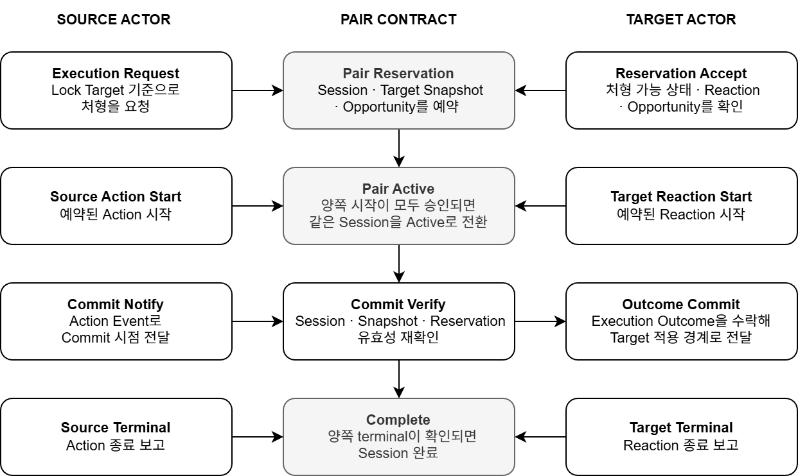
다이어그램 해설 | Source와 Target은 같은 Session의 Reservation을 확인한 뒤 Commit하거나 Release합니다. 일반 Signal처럼 한쪽이 전달하고 다른 쪽이 독립 소비하는 흐름은 p13~14에서 다룹니다.
구조 해결 | Pair 계약이 reservation·commit·release의 책임을 소유
Source Actor처형 요청과 자신의 Action Commit을 전달합니다. Target의 HP나 reservation을 직접 변경하지 않습니다.
핵심 기준: BT는 실행기가 아닙니다. Blackboard 문맥으로 다음 Intent를 정하고, Task는 실행 요청과 종료 대기만 맡깁니다. 수락·실행·전환·종료는 Player와 공유하는 Action 실행 계층의 책임입니다.
구조 문제 | BT가 실행·종료까지 소유하면 판단과 실행 수명주기가 결합됨
AI 판단과 실행 정책은 서로 다른 변경 이유를 가집니다.BT가 행동의 시작·중단·종료를 직접 소유하면 AI 전용 실행 규칙이 생겨 Player와 Enemy의 정책이 갈라집니다. Dead·HitReact·Incapacitated 같은 절대 상태는 Intent 판단에 반영하되, Action의 수락·전환·종료는 공통 실행 계약에서 처리해야 합니다.
핵심 기준: 결정 정책은 Target 변경을 요청하고, `UCCombatTargetComponent`만 상태를 확정합니다. Consumer는 Snapshot·변경 Event를 읽어 반영하므로 Target 교체·소멸의 기준을 공유합니다.
구조 문제 | 대상이 여러 곳에 분산되면 교체·소멸·늦은 Clear에서 기준이 갈라짐
현재 Target은 Actor 포인터 하나만으로 충분하지 않습니다.선택 정책, AI, Lock-on, HUD, Facing이 각자 Target을 보관하면 동일한 교체와 소멸을 다르게 해석할 수 있습니다. 이전 Target을 기준으로 도착한 Clear가 새 Target을 지우지 않도록, 변경 세대와 수명 정리를 상태 계약에 포함해야 합니다.
Target State Contract | Request로 바꾸고 Snapshot·Event로 소비
TARGET STATE CONTRACT | Request → Authoritative State → Projection
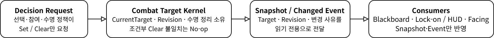
다이어그램 해설 | 여러 결정 주체는 Target 변경을 요청하지만, 상태 변경은 Combat Target Kernel만 확정합니다. 후보 선택은 p4, 다수 Enemy의 참여 역할은 p18에서 다룹니다.
SoT 사용례 | 하나의 Target 상태를 AI·표시·실행이 함께 읽음
각 기능은 Target을 별도로 보관하지 않고, Combat Target Kernel이 제공하는 Snapshot을 읽거나 Changed Event를 구독합니다.
ENEMY AI SIDE
AI Context / BT
Snapshot의 Target을 읽어 Blackboard 문맥과 대상 유효성을 갱신합니다. Intent·거리 판단은 이 투영값을 사용합니다.
PLAYER SIDE
Lock-on / HUD
Changed Event를 받아 Lock 상태와 Target Marker를 갱신합니다. 표시 상태가 별도 Target을 소유하지 않습니다.
COORDINATION
Facing / Execution
Facing은 Target 변경을 회전 기준에 반영하고, Execution은 Session의 Target·Revision 일치를 다시 확인합니다.
구조 해결 | 결정·상태·소비를 Target State Contract로 분리
Decision Request선택·참여·수명 정책은 Set / Clear를 요청합니다. Target 상태를 직접 보관하거나 변경하지 않습니다.
핵심 기준: 인지 근거는 참여 권한이 아닙니다. `UCWorldSubsystem_CombatParticipation`이 Participant × Target의 live Evidence를 집계해 Assignment를 만들고, `Assignment != None`만을 참여 역할의 권위로 사용합니다.
구조 문제 | Enemy가 인지 결과로 개별 참여를 판단하면 역할 배분이 불안정해짐
여러 Enemy의 인지는 곧바로 공격 권한이 될 수 없습니다.Perception과 HitReactive는 참여 판단의 근거일 뿐입니다. 역할·정원·해제를 각 Enemy가 독립 처리하면 동일 Target의 교전 인원과 Evidence 종료 시점이 일관되지 않습니다. Evidence가 끝났다는 이유만으로 진행 중인 정확한 Action을 즉시 해제하면 실행 수명과 참여 수명도 충돌합니다.
다이어그램 해설 | Perception·HitReactive Evidence는 참여 근거일 뿐 공격 권한이 아닙니다. Assignment와 Applied Snapshot이 참여 수명을 조율하며, Intent와 Target 상태 권위는 p16~17 범위입니다.
구조 해결 | Evidence·Assignment·Applied Snapshot을 분리해 참여 수명 조율
Evidence IngressPerception·HitReactive를 Participant × Target 단위로 기록·갱신합니다. Evidence는 Engage 권한을 직접 만들지 않습니다.
Assignment KernelWorld Subsystem이 live Evidence와 정원으로 None·Observe·Alert·Engage를 할당합니다. Engage는 General Base 뒤에 HitReactive Extra 예외를 적용합니다.
Applied Snapshot / Release GuardParticipant Component는 Assignment Snapshot을 소비해 필요한 투영을 반영합니다. Evidence 종료 뒤에는 정확히 일치한 Action lock만 terminal 또는 timeout까지 임시 보호합니다.
분석 질문: 80 Enemy 조건의 대상 확정 지연이 Blackboard·교전 요청 이후가 아니라, 유효 Player가 후보로 남기 전 단계에서 발생하는지 확인했습니다. Team Attitude / Affiliation 적용 뒤 후보 수와 First Valid Target 지연을 같은 방식으로 비교했습니다.
문제 제기 | 무효 Enemy 후보가 쌓이면 유효 대상 확정이 늦어짐
후보 집합이 커지면 유효 대상을 찾기 전 단계의 판단 비용이 함께 커집니다.80 Enemy 조건에서 각 Enemy는 Player 외 다른 Enemy도 perception 후보로 함께 수집했습니다. 유효 Player를 후보 집합에서 식별하기 전까지 Candidate Map과 후속 판단이 불필요하게 커질 수 있으므로, 지연이 후보 구성 단계에서 발생하는지 p95로 분리 측정했습니다.
측정 환경80 Enemy · 동일 테스트 맵
측정 지표FirstValidLatency p95
변경 범위Team Attitude / Affiliation
80 Enemy p95 | 후보 단계의 지연 축만 크게 감소
Relative Index · Before = 100
BeforeAfter
First Valid Target10.064s → 1.070s
100 → 10.6
AI Perception0.8292ms → 0.1128ms
100 → 13.6
AI Context Update0.4611ms → 0.2943ms
100 → 63.8
BT Tick0.7061ms → 0.5397ms
100 → 76.4
FrameTime22.6775ms → 22.5861ms
100 → 99.6
GameThreadTime22.6964ms → 22.6251ms
100 → 99.7
GPUTime11.5667ms → 11.4784ms
100 → 99.2
항목별 Before p95를 100으로 환산했습니다. 실제 단위값은 각 항목 아래에 병기합니다.
측정 계약 | 조건·원본·해석 범위를 고정
측정 환경80 Enemy · 동일 테스트 맵 · 약 37초 캡처. 시작·끝 각 3초를 제외합니다.
원본·산출Before/After CSV와 동명 Candidate Audit 로그를 한 실행 쌍으로 대조하고, Enemy별 감사와 CSV Profiler의 p95를 사용합니다.
해석 범위후보 수·유효 대상 확정 지연의 1회 비교입니다. 전체 Frame/Game/GPU 개선이나 반복 재현성으로 일반화하지 않으며, 3회 반복 측정은 보완 예정입니다.
요구조건 | Focus된 Actor의 현재 상태와 Facing 문맥을 한 Runtime 화면에서 대조
시스템별 상태를 따로 따라가지 않고, 특정 Enemy의 현재 문맥과 Target Facing 상태를 함께 확인할 관찰 경로가 필요했습니다.Targeting·AI·Execution·Balance 등은 각자 상태와 이벤트를 소유합니다. Focus된 Actor를 Character Details와 Facing 문맥의 공통 기준으로 삼아 원인을 좁히되, 디버그 도구가 게임플레이 상태를 변경하거나 판정 권한을 갖지 않도록 구성했습니다.
PIE 관찰의 표시 조건과 Focus 대상을 Editor Panel에서 준비하는 session-only bridge
Editor ToolPrepare to Observe
설계 기준: `PortfolioDebugOverlayEditor`는 Runtime Overlay의 상태·저장소를 소유하지 않습니다. 등록된 표시 CVar와 기존 PIE command 경로만 연결해, p.20의 Focus 기반 관찰을 Editor에서 준비합니다.
요구조건 | PIE 관찰 전 표시 조건과 Focus 대상을 반복 콘솔 입력 없이 준비
관찰을 시작하려면 표시 설정과 대상 선택이 모두 필요합니다.Character Details와 Focused Enemy Event Scope는 같은 Focus 대상에 맞춰 읽어야 합니다. 이 준비 절차를 Nomad Panel에 모으되, Plugin은 새 runtime 상태를 만들지 않고 기존 CVar와 command만 요청합니다.
구현 구조 | Editor control plane은 설정 접근과 명령 위임만 담당
EDITOR CONTROL BRIDGE | Panel → CVar / PIE Command → Runtime
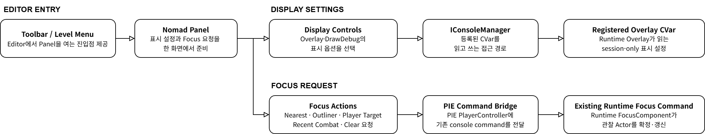
실사용 검증 | Nomad Panel에서 session-only 표시 설정을 현재 값으로 확인
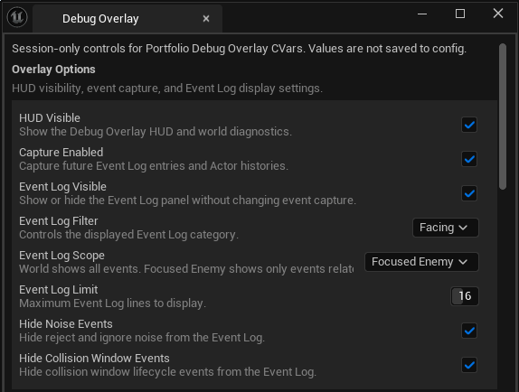
Session-only 설정Panel 상단 안내처럼 설정값은 config에 저장하지 않고 현재 session에만 적용합니다.
Overlay OptionsHUD·Capture·Event Log 표시 여부를 등록된 CVar 값으로 읽고 변경합니다.
Event Log 범위Filter·Focused Enemy scope·표시 행 수로 관찰할 이벤트 범위를 정합니다.
Noise 표시 정리Noise Event와 Collision Window Event를 숨겨 필요한 이력만 읽을 수 있게 합니다.
사용 범위 | 관찰 준비는 Editor에서, 상태 판단과 표시는 Runtime에서
Editor가 하는 일Nomad 진입점, CVar 접근, Focus command 요청을 제공합니다.
Runtime이 하는 일Focus 적용, Snapshot 기록, HUD·Overlay 표시를 담당합니다.
의도적으로 하지 않는 일config·preset 저장, FocusComponent·HUD·Store 직접 변경, Shipping 기능화는 하지 않습니다.
설계 기준: `AssetReferenceInspector`는 선택 Asset과 조건으로 Dependencies·Referencers를 조사하고, 현재 Tree를 CSV로 기록합니다. 결과는 변경·삭제가 아닌 검토 입력입니다.
요구조건 | Asset 변경 전 참조 방향과 조사 조건을 같은 기준으로 확인
조사 결과에는 기준 Asset과 조회 조건이 함께 남아야 합니다.수동 탐색만으로는 어느 방향의 관계를 어떤 깊이와 필터로 읽었는지 다시 확인하기 어렵습니다. 선택 조건과 결과 Tree를 연결해 재검토 가능한 조사 근거로 남기되, Unused Candidate를 삭제 판정으로 사용하지 않습니다.
구현 구조 | 선택 조건을 Asset Registry 조회·Tree·CSV 기록으로 연결
ASSET REFERENCE INVESTIGATION | Select → Query → Tree → Review / Record
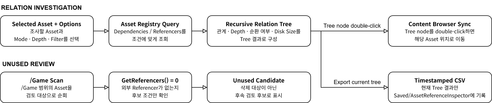
실사용 검증 | 선택 Asset의 관계 결과를 Tree에서 읽고 현재 결과만 기록
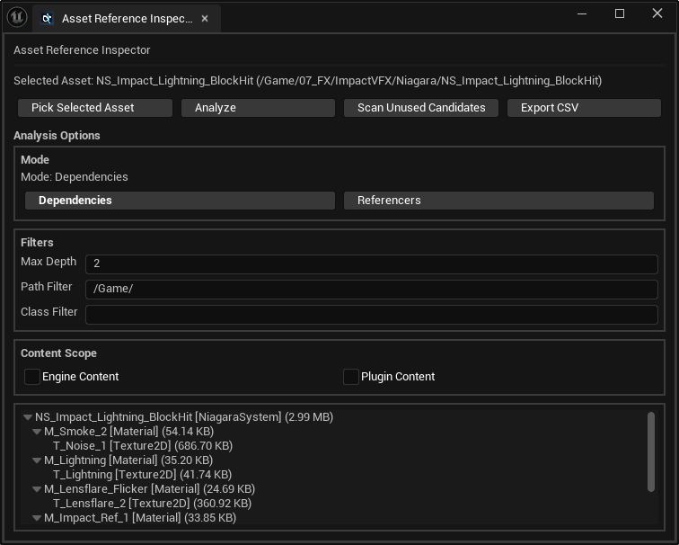
조사 기준 명시Selected Asset·Dependencies 모드·Max Depth·Path Filter가 현재 Tree의 해석 기준입니다.
Tree 관계 결과선택 Asset의 Dependency Tree와 각 관계 Asset의 에디터 프로젝트 디스크 크기 추정치를 확인합니다.
현재 결과 기록현재 Tree만 Export CSV로 timestamped 파일에 기록하며, 결과는 삭제 판정이 아닌 검토 입력입니다.
사용 범위 | 참조 조사 결과는 변경·삭제 판단의 근거가 아니라 검토 입력
조사하는 것Asset Registry의 Dependencies·Referencers 관계와 현재 Tree입니다.
기록하는 것조회 결과 Tree를 timestamped CSV 행으로 남깁니다.
판정하지 않는 것Unused Candidate의 삭제 가능 여부, cooked size·runtime memory, 동적 경로의 완전한 추적은 보장하지 않습니다.
in-place Body Motion을 Root Track으로 옮기기 전 복구 경로를 확보하는 Animation Modifier
Animation ToolApply and Revert
설계 기준: `UCAnimModifier_TransferBodyMotionToRoot`는 raw bone transform track을 직접 수정합니다. 변환 전에 수용 가능한 입력을 확인하고 Root·direct root child의 기존 track을 backup해, Apply 뒤에도 정해진 범위에서 원래 상태로 되돌릴 수 있게 구성했습니다.
요구조건 | in-place Animation의 Body Motion을 Root로 옮기기 전 복구 경로를 먼저 확보
raw track 변경은 수용 조건과 복구 범위를 함께 가져야 합니다.기존 Root Motion이 누적되거나 Apply 뒤 원래 track을 되돌릴 수 없는 상황을 막기 위해, hierarchy·frame·tolerance·transferable delta를 먼저 확인합니다. 조건을 통과한 경우에만 쓰기 전에 Root와 direct root child track을 backup합니다.
구현 구조 | Preflight·Track Backup·Apply·Revert를 하나의 안전 계약으로 분리
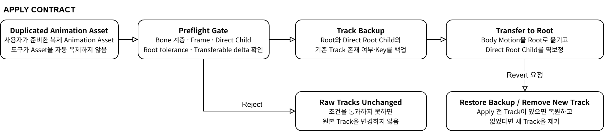
실사용 검증 | 동일 Animation Asset에서 Before·Apply·Revert를 순서대로 대조
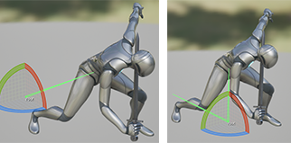
실사용 검증 | 동일 Animation Asset의 Apply 전·후 비교 좌측 in-place Body Motion과 우측 Root Track Transfer 결과를 같은 포즈에서 대조합니다. Revert 동등성은 별도 검증 대상으로 유지합니다.
수용 조건Hierarchy·frame·기존 Root Motion·source delta를 확인해 부적절한 입력을 거절합니다.
Apply 범위Root와 direct root child raw track만 backup·수정합니다.
Revert 범위backup key 복원 또는 Apply 전 없던 track 제거로 한정합니다.
사용 범위 | Editor raw track 수정의 수용·복구 계약
수용하는 입력사용자가 복제한 in-place Animation 중 hierarchy·frame·tolerance 조건을 충족한 경우입니다.
보관·복구하는 범위Root와 direct root child의 기존 raw transform track입니다.
보장하지 않는 것자동 Asset 복제, 모든 bone 복원, 일반 Undo, 모든 Animation의 시각 보존·변환 성공은 주장하지 않습니다.
설계 기준: AI 제안은 현재 코드·문서 맥락을 조사하는 보조 입력일 뿐, 구현 사실이나 완료 결과가 아닙니다. Work Brief로 목표·비범위·수용 기준을 먼저 고정하고, 개발자 판단과 실제 검증 상태를 같은 작업 단위에 기록합니다.
요구조건 | AI 초안을 반영하기 전에 작업 범위·판단 책임·검증 상태를 분리
AI의 제안과 검증된 결과를 같은 것으로 취급하지 않습니다.Work Brief가 목표·범위·완료 기준을 먼저 고정하고, AI 초안은 개발자 수용 판단 뒤에만 변경 작업의 입력이 됩니다. Build·PIE·Editor·Asset 확인을 수행하지 못한 항목은 성공으로 바꾸지 않고 미검증 사유와 다음 조치로 남깁니다.
운영 구조 | Brief부터 검증 기록까지 개발자 판단을 통과하는 작업 통제 흐름
[AI-Assisted Work Control Flow Diagram · 사용자 제작 예정]User Request → Work Brief (Goal · Scope · Non-scope · Acceptance Criteria) → Current Context Inspection AI Proposal / Draft → Developer Review / Decision → Reject / Revise 또는 Apply Change Verification by Type (Diff · Build · PIE · Editor · Asset) → Verified / Unverified + Reason → Verification Record
실사용 검증 | 동일 Work ID의 Brief·Review·Verification Record를 함께 대조
[AI Workflow 동일 Work ID 문서 보드 · 사용자 제작 예정]Work Brief: Goal · Scope · Acceptance Criteria Review / Decision: AI 제안의 수용·보류·수정 근거 Verification Record: 변경 파일 · 수행 검증 · 미검증 사유
실사용 검증 캡처 슬롯 세 문서에 동일 Work ID 또는 작업명이 읽혀야 하며, 일반 Prompt 템플릿만으로 대체하지 않습니다.
AI의 역할현재 맥락 조사, 계획안, 코드·문서 초안을 보조합니다.
개발자 판단수용 여부, 구조 판단, 변경 범위와 우선순위를 결정합니다.
검증 상태 기록수행 결과와 미검증 사유를 분리해 완료로 오인하지 않게 합니다.
사용 범위 | AI는 보조 입력, 완료 판단과 검증 책임은 개발자에게
AI가 하는 일조사 후보, 계획안, 코드·문서 초안을 제안합니다.
개발자가 하는 일수용 여부, 구조 판단, 변경 범위와 우선순위를 결정합니다.
완료로 쓰지 않는 것Build·PIE·Editor·Asset 확인 없이 추정만으로 성공 처리한 결과입니다.
핵심 기준: B05는 첫 overlap의 문제 기록이고, D13은 그보다 앞선 Damage Pipeline 점검 기준입니다. P12·과거 commit·현재 코드를 시간과 역할에 따라 대조하되, 과거 구현의 클래스명과 현재 클래스를 동일시하지 않습니다.
추적 요구조건 | 과거 기록과 현재 코드의 명칭이 달라도 변경 계약을 다시 확인
문제·판단·현재 구현을 한 줄로 연결하기보다, 각 기록이 맡은 역할과 시점을 분리해 읽어야 합니다.B05는 첫 overlap이 INDEX_NONE(-1)로 reject될 수 있었던 증상, D13은 선행 Pipeline 기준, P12는 관련 문서를 참조한 변경 기록입니다. 과거 commit의 CAttachment와 현재 ACWeaponActor는 이름이 다르므로, collision 활성화 전에 Hit Window 상태를 준비하는 순서 계약을 기준으로 대조합니다.
변경 추적 관계 | 기록의 시점과 현재 코드의 순서를 분리해 연결
[B05 Change Traceability Relation Diagram · 사용자 제작 예정]D13: Pipeline Baseline ┐ B05: First Overlap Symptom ├→ P12: Internal Change Record → Commit 746ea548: Historical CAttachment Patch → Current ACWeaponActor: Collect Candidate → Open Hit Window → Enable Collision → Historical Validation Record / Submission Runtime Capture: Needs Capture
증거 대조 | 문제 기록·변경 판단·과거 patch·현재 코드
01. B05 | 문제 증상collision enable이 먼저 실행되면 첫 overlap이 HitWindowId = -1을 읽어 InvalidRequest로 reject될 수 있음을 기록합니다.
02. P12 | 변경 판단B05와 D13을 관련 문서로 참조하고, 활성화할 collision을 수집한 뒤 Hit Window를 준비하는 순서를 남깁니다.
03. Commit 746ea548 | 과거 patch과거 CAttachment 변경 이력입니다. Git 기록은 변경의 연결점이며 현재 실행 결과를 증명하지 않습니다.
04. 현재 코드 | 순서 계약ACWeaponActor::CollisionEnabled는 후보를 수집하고 Window ID·열림 상태를 준비한 뒤 실제 collision을 활성화합니다.
문서·Git 기록B05·D13·P12·과거 commit의 역할과 시점 확인
현재 코드현재 구현의 순서 계약 읽기 확인
제출용 런타임 증거첫 overlap 정상 처리 캡처는 아직 없음 · Needs Capture
추적 범위 | 변경 계약은 확인하고, 현재 실행 결과는 별도로 검증
추적하는 것증상·변경 판단·과거 patch·현재 코드가 어떤 계약으로 이어지는지입니다.
직결하지 않는 것D13을 B05 후속 문서로, 과거 CAttachment를 현재 클래스와 동일한 구현으로 쓰지 않습니다.
남은 보완현재 빌드에서 첫 overlap이 유효한 Hit Window로 처리되는 runtime capture가 필요합니다.